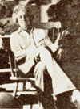

What' the matter with our modern, technologically based society anyway? Why isn't it more satisfying? Why do so many
of us now feel that some vague something hounds us and diminishes us and makes us into something less than we
should be? Most specifically of all, do we really use television-and so many other "benefits" and " tools" of our
technological age-or does it use us? Jerry Mander (see photo) speaks the unspeakable and asks the unshakable in a
remarkable new book that is being completely serialized in this magazine. This is the seventh installment in the series.
From Four Argumenmts for the Elimination of Television by Jerry Mander, copyright © 1977 by the author. Reprinted with the permission of William Morrow and Company, Inc. Available in paperback for $4.95 from any good bookstore of for $4.95 plus 95 cents shipping and handling from Mother's Bookshelf, P.O. Box 70. Hendersonville, North Carolina 28739.
Along with the venality of its controllers, the technology of television predetermines the boundaries of its content. Some information can be conveyed completely, some partially, some not at all. The most effective telecommunications are the gross, simplified linear messages and programs which conveniently fit the purposes of the medium's commercial controllers. Televisions highest potential is advertising. This cannot be changed. The bias is inherent in the technology.
A good way to think about televisionin fact all the media is as a kind of telescope in the sky, Dying around, constantly looking. Then from its perch in the sky, it zooms down to a single spot on the planet, a small group of people shooting each other. It takes this single event out of billions and billions of other little events and sends it zooming through space to television antennas, and then out through an electron gun into (on the average) 30 million people sitting at home in dark rooms with their eyes still. The event gets reconstructed in the brains of these people as an image. Recorded. All these 30 million people have recorded the same image from this single distant spot where they are not. This becomes their experience of that moment.
If the telescope has selected for broadcast relay a shooting from an entire planet's worth of activities, in the next moment it may just as easily choose a Super Bowl game, or a threatening remark by a Middle Eastern leader, or a program of people trying to win prizes, or a movie about the Old West. All other subjects were not selected, at least at this moment. The telescope did not select views of the ocean as the tide comes in, or people sitting on front porches, or young people knocking on doors to tell a neighborhood about a zoning hearing.
The question to ask is if there is a logic in this selection. Are there reasons why the telescope selects one thing and not another?
There certainly are Dozens of them.
The first and most obvious of these reasons is the one that most critics of evision devote themselves to. The people who control television, businessmen, operate strictly out of considerations of budget and profit, in addition to bringing along their own political, perceptual, and social biases. It was to array their influence that so many thousands of media reformers devoted years of effort to democratizing access to the medium and its content. And yet at present there are still no poor people running television, no Indians, no ecologists, no political radicals, no Zen Buddhists no factory workers, no revolutionaries, no artists, no Communists, no Luddites, no hippies, no botanists, to name only a few excluded groups.
To have only businessmen in charge of the most powerful mind-implanting instrument in history naturally creates a boundary to what A selected for dissemi nation to nearly 250 million people. There can be little disagreement with the point that if other categories of people had control, then the choices would be different. If television is a medium of brainwash, then a more diverse brainwash would surely be an improvement over the sort we get at present.
The overriding bias of television, then, the bias which contains all the other biases, is that it offers preselected material, which excludes whatever is not selected. Now, of course, this is utterly obvious. And, yes, it is true of all experiences. When you are doing one thing, you exclude everything else that you might be doing.
This only becomes significant concerning television when we forget that: [1] someone has selected our experience for us, and [2] we have given up awareness information and experience that is not part of television.
In the years I was researching and working on this book, I only ran into one person who works in television and was speaking publicly on points similar to this one. He was Robert Keeshan, the actor who plays Captain Kangaroo. At the 1974 Communications Seminar at San Francisco State College he said:
"When you are spending time in front of the television, you are not doing other things. The young child of three or four years old is in the stage of the greatest emotional development that human beings undergo. And we only develop when we experience things, real-life things: a conversation with Mother, touching Father, going places, doing things, relating to others. This kind of experience is critical to a young child, and when the child spends thirty-five hours per week in front of the TV set, it is impossible to have the full range of real-life experience that a young child must have. Even if we had an over-abundance of good television programs, it wouldn't solve the problem. "
The act of sitting in front of television is itself a replacement of other modes of experience and the awareness these would bring. In this way, television is an acceleration of a condition that began with our artificial environments. We are already separated from most experiences with an unmediated planet. We have given up our personal sensory informational systems. The artificial forms around us already limit our experience and awareness. Our knowledge of the outside world was confined to a narrower field even before television was invented.
With television, however, the artificial information-field is brought inside our darkened rooms, inside our stilled minds, and shot by cathode guns through our unmoving eyes into our brains, and recorded. We have no participatory role in gathering data. Our information is narrowed to only what the telescope provides. If we don't experience a wider information field, we lose knowledge of that field's existence. We become the hermit in the cave who knows only what the TV offers. We experience what is, not knowing what isn't.
The people who control television become the choreographers of our internal awareness. We give way to their process of choosing information. We live within their conceptual frameworks. We travel to places on the planet which they choose and to situations which they decide we should see. What we can know is narrowed to what they know, and then narrowed further to what they select to send us through this instrument of theirs.
The kind of people who control television is certainly a problem. But this is only the beginning. While our field of knowledge is constrained by their venialbility and arrogance, the people who run television are constrained by the instrument itself.
Television is no open window through which all perception may pass. Quite the opposite. There are many technological factors that conspire to limit what the medium can transmit. Some information fits and some doesn't. Some information can pass through, but only after being reshaped, redefined, packaged, and made duller and coarser than before. Some ways of mind can be conveyed and some cannot.
The wrinkle in the story is that what can be conveyed through television are the ways of thinking and the kinds of information that suit the people who are in control. This is why they like it so much. It is obviously efficient for them to concentrate their communications within a medium that is good at conveying their forms of mind, just as a person with a drive for power is more apt to express that in politics than in gardening. Conversely, it is logical that the medium will not respond well to people or attitudes that defy its limits. It will throw them off, or distort their messages, as a computer would shun anyone who wishes to use it to express feelings of loving ten derness. It might program such a message, but only the words will come out on the tape; not the loving tenderness.
So we have a chicken-egg problem. It's difficult to tell which came first, the technology or its controllers. It may not be that the corporate mentality won the war to control television. As the rest of Argument Four will suggest, the technology itself picked its master, through the inexorable technological factors that confine its use.
As has been mentioned, the television screen produces its image by way of a grid of dots located along five hundred lines. This might seem to be sufficient for fairly detailed images, but it is not. Roughly speaking, the experience of looking at a TV picture is like looking at the world through a tea strainer. The picture is located along the grids. You fill in the blanks.
Compare the image of your television screen with any other image in your television room: the bookcase, the table, the rug. Obviously the actual object is vivid in comparison with the television image.
Television production people are exquisitely aware of this. There is an electronics term to describe it: "signal-to-noise ratio." Ordinarily applied to sound, the term can be applied to images as well.
The "signal" is the primary image that they are attempting to convey. The "noise" is the background, the fuzz, from which the signal has to stand out to be seen properly. A "clear" picture is one in which the signal and noise are well differentiated. In television, however, since the differentiation is difficult to achieve, program decisions and production styles have to be chosen to maximize what is possible. An a result, there is a tendency to concentrate on images which offer a large signal-to-noise distinction.
An enormous percentage of television images are close-ups of faces. This is not accidental. Faces in close-up are about the sharpest signal that television can produce while still conveying content. Even so, if the background behind the face is complex, filled with varieties of objects and color tones, the face merges with the background and it all becomes a confusing jumble. So even while showing faces, television producers must keep the background "clean" stark, unencumbered. Dramatic programs are constructed so that there are very few adornments and props. This avoids a cluttered image and increases the potential for the primary image to communicate something
This limitation does not exist to the same extent with movies, where the By signal-to-noise ratio is much greater, allowing for images filled with detail. However, when a movie is played on television, much detail is lost. If you will think back to a time when you first saw a film in a theater and then saw it on television, you will realize how much richness is lost in the translation from one medium to the other.
There is also a low signal-to-noise ratio in television sound. It is very low fidelity, although it could be greatly improved. High fidelity sound, equal to recording sound, is possible with television speaker technology but too costly for mass markets.
An additional factor fuzzing up the sound is the high-pitched whistle that emanates from all television sets. Caused by the interaction of the audio and visual electron fields, this whistle is unavoidable with television technology, at least in marketable price ranges. And so both television picture and sound remain fuzzy.
This problem of indistinctness, rarely noted or discussed by critics of television, cannot be over-estimated. It is a major factor influencing all decisions made by television producers. It skews all programming-both choices of subject and treatment of the choices-toward those that offer the highest possible contrast between foreground and background, signal and noise, color and tone. This leads to images which tend to the larger as opposed to the smaller, to the broad as opposed to the detailed, to the simple as opposed to the complex, to the obvious rather than the subtle. Because of these tendencies, inexorably imposed by the technology itself, the communicable content of all programs is affected. Beyond confining the visual image and the choices of sound, these tendencies affect the emotional content. Because the images are indistinct, subtle feelings are more difficult to transmit through television than the larger emotions-the foreground emotions, as it were-that can be depicted efficiently by larger facial expressions, or even by noncloseup body movements.
Even with a reliance on facial closeups, what television can convey is a reduced version of what is possible in real life or even in still photography or film. The human relationships which are shown on television, therefore, tend to be those that can be shown on television. These dwell on the grosser end of the human emotional spectrum. The more subtle expressions, those which express intimate, deeply personal feelings, are lost in the blur.
In recent years there has emerged a very vocal group of outraged psychologists, educators and parents who speak of the urgent need to show positive behavior, such as loving, caring, sharing, and warmth, in television programs. They deplore the emphasis on "anti-social" behavior that is common on TV. Unfortunately these reformers are doomed to fail in their efforts because the medium Is far better suited technically to expressing hate, fear, jealousy, winning, wanting and violence. These emotions suffer very little information loss when pushed through the coarse imagery of television. Like other gross personal expressions-hysteria, or ebullience, or the kind of one-dimensional joyfulness usually associated with some objective victory-the facial expressions and bodily movements of antisocial behavior are highly visible. Hate, anger, competitiveness are obvious broad-band feelings with broad-band expressions. Most of them can be well communicated solely through body movement. No detail is needed to get the point, and neither is any special talent on the part of actor or director. They come through the filter of television with a minimum of information loss. The signal-to-noise ratio is relatively high.
For these technical reasons, among others we will get to later, there is an emphasis on sports and violence in television programming, and there is great viewer interest in them.
The popularity of such programming is not so much a sign that public tastes
The bias toward the coarse, the bold, and the obvious finds its way into all other categories of television programming, including even those that deal with so-called objective events in the world. News producers will always choose the easily communicable image are vulgar, as they are assumed to be in many quarters ("People want that kind of programming"), as it is a sign that these programs are the ones which manage to communicate something, at least, through television. Rather than illustrating the limits of the public mentality or taste, they illustrate the limits of the medium itself. The public wisely chooses programs which work best in a medium in which anything of a more subtle nature loses so much in translation as to be noncommunicative.
This is not to say that the businessmen who are the television powers that be aren't predisposed to further the values of competition and social Darwinism which they understand best and which are inherent in sports and violence programs. But no matter what their inclination, the fact exists that the kind of programming in which the least information is lost is the grosser forms: sports, violence, police action, as welI as quiz shows, game shows, soap opera, situation comedy and news about murder, conflict, war, power politics and charismatic leaders. All of these categories of programming communicate on television because they deliver clear, easily grasped visual and auditory signals, together with broadband emotional content, all of which make them highly efficient in a low-definition medium.
On the other hand, the kinds of feelings and behavior which the reformers like to call prosocial cannot be conveyed through television by obvious facial expression or physical movement.
While it may be possible to show friendship in a dramatic context, it cannot be explored very far visually, because expression of such feelings exists in an inward rather than outward realm of experience. Love A simply not as easy to demonstrate through coarse imagery as anger or competition. The heights of intimate feeling between-lovers, or parents and children, or among children are actually experienced in life's quietest moments. Ordinarily they do not involve any visually obvious action, unless it is the most subtle facial expression-peace, tranquility, satisfaction not easily captured in any photography, but damned near impossible in the coarse imagery of television.
How would you show caring on television? You could present images of people who presumably care about each other doing things which express that feeling. Yet, the things people usually do to express real caring are very small, intimate things. The inner feeling may be strong but, unlike rage, the acts which express it are rarely sweeping.
What about warmth? Well, you could illustrate warmth with hugging or tender smiles. It's not that it can't be done, it's just not as easy to show on television as coldness is. The behavior of the Bionic Man, for example- coldness, determination, efficiency, domination is easy to see because it can be demonstrated with nearly no facial expression at all. Therefore, this sort of behavior communicates more efficiently on TV.
Even if a given subtle emotion can be conveyed from time to time, you could never build an entire program on it as you could on violent emotions. In signal-to-noise terms the entire program would become indistinct in comparison with the background of more aggressive, expressive and efficient action shows.
What I am discussing here are tendencies of the medium. These are biases, not absolute restrictions. Though extremely rare, there are occasional examples of television programs that overcome the bias. Bergman's Scenes From A Marriage was one such example. It succeeded only because of the rare skill and sensitivity of the (Erector and the performers. Their deep understanding of the medium allowed them to use it efficiently. Scenes qualifies as the exception that proves the rule.
Many Americans saw this production in movie houses, but it was originally created for television. This A why Bergman devoted so much of the production to facial close-ups. In a theater two and one-half hours of facial close-up became oppressive. When one is sitting in a movie house, one wants something beyond closeup imagery. However, on television, nothing other than closeup image-way could convey the subtle themes of a plot that concerned the excruciating shifts of feeling within a disintegrating marriage.
Bergman had to convey tenderness, af fection, caring, concern and intimacy, together with ambiguity, and then violence, rage, sorrow. These latter scenes, the violent ones, were among the very few in which he allowed the camera to pull back from the action, because the physical movement could convey the meaning.
In demonstrating the best that is possible on television if you honor the medium's limits absolutely, Bergman also illuminated the absoluteness of the limits. He took television as far as one could and succeeded well enough. There is a tendency to forget that one cannot go further.
Bergman is one of the rarest talents in the history of moving-image media, and given even his difficulty in communicating subtle feeling, the inherent resistance of television becomes clearer. Lesser talents, not daring to try what Bergman did, have to work against the medium, as it were, choosing more confined, easier-to-handle imagery, and emotional content that fits the narrowed scope of TV. Most directors will not even attempt to deal with subtle realms of information and they are wise not to. Producers and sponsors will also tend to avoid such subtlety because it is so unlikely to get high ratings.
Roots was not an exception to this rule. In fact; it proves the rule. In the book, the cultural nuances of relationships were emphasized and developed, while the TV production avoided them altogether. Nor was there much effort to present the subtle ambience of the African natural environment, which was also highly developed in the book. The television production wisely concentrated on the larger, more explicit, and therefore more reproducible elements of conflict in the story and the kinds of family attachment made familiar by soap operas.
This is not to say that the production didn't have value. It is only to remark that the values which were conveyed were the simplest ones to convey. The more subtle values, which are at the heart of the African culture and, therefore, formed the basis for the quality of feeling that existed among the uprooted slaves, were necessarily dropped out. In the end, the viewer got some fairly good information and feeling about good guys and bad guys during a certain period of history, but virtually no understanding of the successful repression of an entire culture and way of mind.
So it goes in all dramatic programming. Nuance is being sacrificed to the larger and more visible elements of story and the came of the sacrifice A a technical limitation of the medium.
Problems of subtlety don't present themselves in quiz shows, sports events and sitcoms. These are confined to areas of human expression which are easy to capture, easy to communicate, and easy to understand, even with directors and writers of ordinary talent and in a medium as vague as television. As a result, there is a tendency to favor such productions.
The bias toward the coarse, the bold, and the obvious finds its way into all other categories of television programming, including even those that deal with so-called objective events in the world. Pub lic affairs programs are seriously biased away from coverage of highly detailed, complex, and subtle information, and so are news shows. Ordinarily this bias is believed to result from time factors-it takes too long to explain complicated issues. However, certain kinds of visual information are harder to capture than others. News producers will always choose the more easily communicable image.
Edward Epstein, in his very important News From Nowhere, interviews television news producers, seeking to define an inherent bias in the news that is related to technical and other factors. He observes:
"The one ingredient most producers interviewed claimed was necessary for a good action story was visually identifiable opponents clashing violently. This, in turn, requires some form of stereotype: military troops fighting civilians, black versus white students, workers wearing hard-hats manhandling bearded peace demonstrators, were cited by producers as examples of the components for such stories. Demonstrations or violence involving less clearly identifiable groups make less effective stories, since, as one CBS producer put it, 'It would be hard to tell the good guys from the bad guys. " . . . since news stories tend to be constructed from those aspects of a happening that can be easily filmed and recorded, and not from the poorly lit, softly spoken or otherwise inaccessible moments, events tend to be explained in terms of what one producer called 'visual facts.' One correspondent pointed out, for example, that television coverage of riots or protests at night tends to focus on fires, even if they are insignificant trash can fires, since they provide adequate light for filming. Hence urban riots tend to be defined in terms of the 'visual facts' of fires, rather than more complicated factors. Visual facts, of
All of the information is narrowed to fit the sensory transmission limits of the medium and distorted by the sensory disconnections in the human. Any messages that are dependent upon sensory understanding and interaction are not going to work on television course, cover only one range of phenomena, and thus tend to limit the power of networks to explain complex events."
Television cannot transmit information that comes in the form of smell, touch or taste.
Furthermore, as we have discussed, the information it can transmit through the visual and auditory senses is extremely narrow. The ranges of color, brightness, depth are confined by the technology. The aural range is confined within narrow amplitudes, pitches and tones, dictated by low-cost speaker sys tems. The sounds we hear are flattened by the speakers. Smaller or distant sounds are blotted out by the whistle of the electron fields.
Unfortunately, given the human tendency to accept the information of our senses as total and reliable, we are not aware of the aspects of the visual and aural information that are dropped out of this new information package. We assume that when we see and hear something, we are seeing and hearing everything that is being transmitted, as though we were actually observing the event directly. Or else we assume that what is lost is too minor to matter we are inclined to believe the information as though it had not been processed, reduced and reshaped before we experienced it.
In addition to the elimination of three sensory systems and the narrowing of two others, there is another sensory oddity in the television experience. Television disconnects the two operative sense modes-visual and aural.
You are sitting in a room watching an image from miles away. You see the place, but the image you see and the sounds which reportedly connect to the image are not really connected. The sounds are "nearer" to you than the images are.
Let's say you are watching two people walking on a faraway hillside. In real life, you could not make out what the characters are saying, but on television you can. The voices are amplified or dubbed in, so you can hear a conversation that would otherwise be inaudible. The natural informational balance between aural and visual has been shattered. Now, information that you take in with the visual sense cannot be used to modify or help process the information from the aural sense because they have each been isolated from each other and reconstructed.
Furthermore, while you are watching and listening with your disconnected aural and visual senses, you are smelling some chicken roasting in the kitchen and you are drinking a beer.
So television has attached two of your sensory modes to a distant spot allered their natural arrangement to each other, but left other aspects of your sensory apparatus at home in present time. This is a very peculiar arrangement and in a way it's sort of funny, like playing a perceptual game in a technology museum . It takes on importance when we understand Mat the average person submits to this condition for four hours every day, and while in this state is receiving important information about life. All of the information is narrowed to fit the sensory transmission limits of the medium and distorted by the sensory disconnections in the human.
One can imagine the emergence of a new psychological syndrome: "sensory schizophrenia." The cure will involve exercises to resynchronize wildly confused senses with each other, with the mind, and with the world.
Because of all the preceding it ought to go without saying that any messages that are dependent upon sensory understanding and interaction are not going to work on television.
This is very unfortunate for the ecology movement.
It always surprises me whenever any attempts are made to show wilderness or wildlife on television. The fuzzy image previously described is the first problem forests become an ocean depths are impossibly foggy, the details of a plant are impossible to see. So the viewer depends on the voice-over to know what's going on. Because of the blur, naturalist programs focus on such objective behavior as playing, fighting, mating, eating, just as they do with human sitcoms and soap operas. There are more animal programs than plant programs because animals come through better on the fuzzy medium, and the larger and more ramburictious the animal the better.
But even if TV images were not as coarse as I have described them, there would still be no way to understand a forest or swamp or desert without all the senses fully operative, receiving information in all ranges, and freely interacting with each other.
An interesting recent illustration of the problem was a news feature concerned with a decision that a town council had to make. A land developer sought a permit to convert a large marsh area &to a new community of homes. Should the permit be okayed.
It was quite a thorough-going, earnest report. Considering the subject, not ordinarily conceived as "good television" by producers, it was also an extraordinarily lengthy report, about eight minutes of an evening newscast.
The report presented interviews with the council members, interviews with the developer, and interviews with a local conservation group that opposed the project. It presented several Minutes of images of the plants in the marshland, flocks of birds, nesting grounds, all with the appropriate wild-sounding calls.
Having worked as a publicist for many years, in fact, as a publicist for environmental groups, I knew how much work the environmentalists had put into this program and how important they felt it to be. In the end, though, I knew they had failed no matter how this particular vote came out, because if there is anything which cannot be conveyed on television it is a feeling for a marsh. I suspected that the result of the program would be to decrease concern for marshes.
The great majority of viewers watching that program had never visited this marsh or any marsh. These images and words about marshes were probably more than they had ever seen or heard before. Since the news report told them interesting things they did not know-how many varieties of creatures lived there, for example-they may have considered it quite a complete story. In terms of popular media, indeed it was. However, while the viewers knew more than before, they were not likely to be aware of what they did not know and were not getting. As the images of the marsh went hurtling into their brains, accompanied by a news reporter's description of an egret nesting ground, they
On television the depths are flattened, the spaces edited, the movements distorted and fuzzed-up, the music thinned, and the scale reduced. This would have to affect the level of understanding and limit the quality of the experience. probably assumed that most of the relevant data were in hand, that they had learned enough to make a judgment.
Images and words about a marsh do not convey what a marsh is. You must actually sense and feel what a strange, rich, unique and unhuman environment it is. The ground is very odd, soft, sticky, wet and smelly. It is not attractive to most humans. The odor emanates from an interaction between the sometimes-stagnant pools and the plants that live in the mud in varying stages of growth and decay. If the wind is hot and strong, there can be a nearly maddening mixture of sweet and rotting odors.
To grasp the logic and meaning of marsh life, the richest biological system on Earth, one needs to put one's hand into the mud, overturn it, discover the tiny life forms that abound. One needs to sit for long hours in it, feeling the ebbs and flows of the waters, the creatures and the winds.
Television cannot capture very much of this. The attempt to push the information through television goes flat. It doesn't work. The viewer is left to evaluate aspects of the experience that television can capture, and these reduce to objective facts like the arguments among opposing viewpoints as to the best use of this area. People need homes. The developer has a right to profit The tax base of the community is affected. Meanwhile, the ecologists speak of flyways and breeding grounds, of endangered plants and nearly extinct creatures.
A whole world of sensory information has been abandoned, and yet it is in this world that real understanding of marshes exists. And without the understanding who can care about the marsh? Taxes become more important. Birds can be seen elsewhere. Images of mud and reeds do not inspire the mind, especially compared with the hard facts of our world. People need jobs building the houses. Nobody ever "uses" swamps anyway.
It is possible that viewers of that program had a greater feeling for swamps when the swamps resided totally in their imaginations, where, at least, they had the richness that fantasy can create. On television, the fantasy is destroyed and the perspective is flattened.
What was true for this news report is true for all television programs that concern nature. Seeing Me Omsk of Borneo on television makes one believe that one knows something of these forests. What one knows. however A what television is capable of delivering, a minute portion of what Borneo forests are. It cannot make you care very much about them. When Georgia-Pacific proceeds to cut down hundreds of thousands of acres of Borneo forest, as it has so many other forests in the Pacific Basin, one remains unmoved. The wood is needed for homes. The objective data dominate when only objective data can be communicated.
Meanwhile, sitting in our dark rooms ingesting images of Borneo forests, we lose feeling even for the forests near our homes. While we watch Borneo forests, we are not experiencing neighborhood forests, local wilderness or even local parks. As forest experience reduces to television forest, our caring about forests, any forest, goes into dormancy for lack of direct experience. And so the lumber company succeeds in cutting down the Borneo forest, and then, near to home, it also succeeds in building a new tract of condominiums where a local park had been.
In my opinion, the more the natural environment is conveyed on TV, the less people will understand about it or care about it, and the more likely its destruction becomes. Ecologists would be wise to abandon all attempts to put nature on television.
Programs concerned with the arts, programs concerned with many religions and all programs concerned with non-Western cultures are similarly distorted by television's inability to convey their sensual aspects.
Theater, music, dance, if they are to be fully understood and appreciated, require exquisitely fine visual and aural reproduction as well as exquisitely tuned sense reception in the viewer. The experience of them on television is only the barest approximation of the direct experience of the performance. The information loss is enormous, and it is the most critical and subtle information that is lost.
Some people argue that television delivers a new world of art to people in, say, Omaha, who might otherwise never see the Stuttgart Ballet or the New York Philharmonic. They say this stimulates interest in the arts. I find this very unlikely. Information received with only two senses, especially in the limited range of television, and considering the other dulling aspects of the medium, is amply not the same at the receiving end as it would have been in the theater or concert hall.
On television the depths are flattened, the spaces edited, the movements distorted and fuzzed-up, the music thinned and the scale reduced. This would have to affect the level of understanding and limit the quality of the experience. The human senses cannot experience what is not there. If television delivers a drastically reduced version of an art experience, then this is what the senses must deal with, and if one has never directly experienced the real thing, how is one to know that the reality is richer than the television version? Reading Moby Dick as a comic book does not inspire one to read Moby Dick in the original. Quite the opposite. And so seeing the Stuttgart Ballet performing on television leaves one with such a reduced notion of ballet as to reduce the appeal of ballet itself. The result is likely to be boredom and switched channels. To say that such a program stimulates new interest in arts is to believe, as Howard Gossage put it, "that it's possible to convince an eight-year-old that making love is more fun than ice cream cones."
And so it goes in all areas. The religions of the world, from Tibetan Buddhism to many forms of Catholicism, are deeply rooted in the rich interplay of the human mind and senses. On television they must be understood through fixed cerebral channels, leaving description, but no feeling. The same can be said for most cultures of the world, still immersed in the sensory relationships between human and environment. There is no way to effectively convey African cultures, as was mentioned, through images disconnected from the other senses, and certainly not through logical analysis. More often than not these cultures and others are sensually or mystically based and can be deeply understood only in those terms. Unfortunately, television makes the effort to explain them anyway, just as it claims to convey nature, the arts, the news and the details of human feeling.
Human beings who view these attempts are led to believe that these fuzzy little pellets of information about our rich, subtle, complex and varied world constitute something close to reality... What they really do is make the world as fuzzy, coarse, and turned-off as the medium itself.
EDITOR'S NOTE: The second part of Jerry Mander's fourth argument for the elimination of television will be published in MOTHER NO. 60.
|
 STAFF PHOTO |
|
|